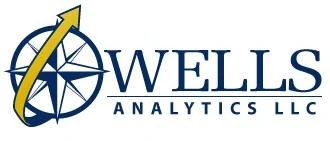

Resilience & human security
Capacity that holds before, during, and after disruption — for communities and institutions alike.

Connecting technology, strategy, and decision-making for leaders who work across government, industry, and communities — including the STAR-TIDES network.
(Placeholder — swap in Lin’s final text)
Wells Analytics helps senior leaders navigate converging, accelerating, and disruptive technologies — linking policy, technology, and people so plans become durable results.
Schedule a consultation →
Leaders and networks across resilience, emerging technology, and civil–military cooperation — including the STAR-TIDES community.
Capacity that holds before, during, and after disruption — for communities and institutions alike.

Strategy for cyber, space, energy, and autonomous systems.

Public–private cooperation and community networks — including STAR-TIDES.
Dr. Linton Wells II has held senior positions across C3I and the interface between policy and technology — including Acting ASD for Networks and Information Integration / DoD CIO.

Connecting innovators, communities, and institutions around practical capabilities for resilience and human security — year-round, not only at the demo.
Talk about STAR-TIDES →
Applied in this draft — keep or swap with demo / event photos when ready.

Hero: Luminous blue–green with a gentler green→blue slope (this mock).

Globe / red-hand STAR art: Use community or demo photos; boardroom for experience.
Discover how technology, strategy, and decision-making can align to support your goals.
Connect with us →